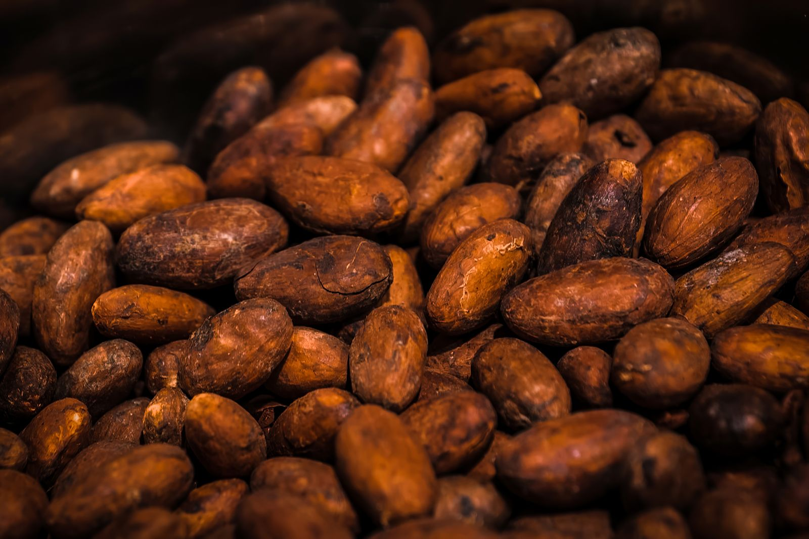
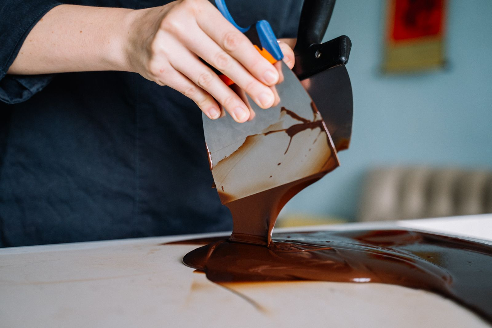

About & method
Bean-to-bar, because the bar should be able to say where it has been.
Ana Beltrán trained as a pastry chef in Spain and spent two seasons in a Paris chocolate kitchen, where the couverture arrived in sacks with someone else's name on it and the interesting decisions had already been taken. She moved to Bristol in 2016 and started Beltrán in 2019, in a railway arch with one small roaster and a second-hand stone melangeur, specifically to take those decisions herself.
The honest version of bean-to-barBean-to-bar means this room buys whole cacao beans and does everything after the fermentary itself: sorting, roasting, cracking, winnowing, grinding, conching, tempering, moulding. It does not mean the chocolate is automatically better. Couverture from a good maker is excellent, and plenty of bean-to-bar chocolate is worse than plenty of couverture — the claim here is narrower and checkable: every stage happened in this room, every stage is recorded on a batch card, and the batch number on the wrapper leads back to that card.
On percentages, once moreThe percentage on a wrapper is the share of the bar that came from the bean — mass and butter together. It is not a strength rating, not a quality grade and not a health claim, and this site makes none. A 62% bar from a fine lot will taste better than an 85% bar from a tired one. That is why the rate card is ordered by lot and handwork first, and why the Explorer explains each band instead of ranking them.


How a batch runs
From a sack of beans to a numbered wrapper.
- Buy & sortLots are bought through specialist importers who publish what the fermentary was paid; the price per kilo is written on the batch card. Every sack is sorted by hand — flat beans, doubles and debris out — because the roaster cannot fix what sorting missed.
- RoastA small drum roaster, one profile per lot, set by tasting the beans at three points during development. The profile is a record, not a secret: it is printed on the batch card with the date.
- Crack & winnowThe roasted beans are cracked and the husks blown away. What remains is nib — the part that becomes chocolate.
- Grind & concheNib, sugar and — for some bars — a little of the bean's own butter go into stone melangeurs for 48 to 72 hours. The long grind is what makes bean-to-bar texture possible without lecithin; the conche is tasted every six hours and stopped by flavour, not by timer.
- RestThe finished chocolate rests in blocks for at least two weeks before tempering. Fresh chocolate tastes unsettled; the rest is not optional and is costed into every lead time on this site.
- Temper, mould, numberTempered on the curves printed on the home page, moulded, rested overnight, then wrapped by hand with the batch number that ties the bar to its card.
Allergens, stated plainly
What is in the room.
The workshop handles tree nuts (hazelnut, almond, pistachio), milk, and egg in ganache work; two fillings contain alcohol. Bars and filled chocolates are made on the same bench, on different days, with a full clean-down between — but they share a room and a melangeur line, so everything is labelled may contain for the allergens above, and every piece carries its own allergen panel. If an allergy is severe, the honest advice is printed here rather than at the till: this is a small open workshop, not a sealed facility, and no bar from it should be treated as allergen-free.
Terms of engagement
The small print, in the open.
Wholesale: minimum 60 bars of one type; discount tiers as printed on the home page; standing orders invoiced monthly on 14-day terms; two weeks' lead on a new bar, five working days on a repeat batch.
Filled chocolates: made weekly, dated from the packing day, never sold past the printed date — including at a discount. Especially at a discount.
Showpieces: six-week minimum lead; 50% deposit on booking, balance on delivery; a site visit and a room-temperature check are part of the quote, and pieces are not offered for rooms above 20 °C. After the event the piece is food, and it is eaten.
Retail: payment at order; bars keep 9–12 months and filled boxes 3–4 weeks, as stamped — storage guidance is on the home page Explorer.
A note on claims this site refuses to make: chocolate here is food, made carefully. It is not medicine, not a mood treatment and not a superfood, and no page of this site will call it one. The strongest claim available is the true one — you can read exactly what went into a batch and check the numbers yourself.